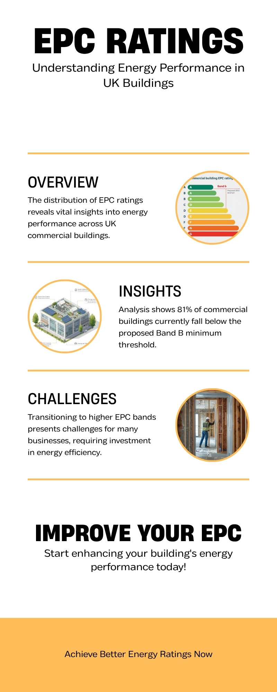

Commercial landlords with vacant properties have always had to contend with empty rates bills. But in 2026, a second regulatory pressure is bearing down with equal force: energy efficiency requirements. From next week, the new business rates system will push empty property costs sharply upward. Meanwhile, Minimum Energy Efficiency Standards (MEES) deadlines are closing in, threatening to make the majority of the UK’s commercial building stock unlettable within four years. For owners of vacant units, these two forces are converging into a perfect storm that demands immediate, strategic action.
The key numbers: Rateable values are rising by 19.2% nationally from 1 April 2026. Separately, British Property Federation research shows that 81% of commercial buildings in England’s major cities currently fall below an EPC rating of B – the standard the government has signalled will become the legal minimum for letting by 2030. If you own a vacant commercial property that scores below EPC B, you are being squeezed from both directions at once.
Pressure One: The April 2026 Rates Reset
Readers of this blog will be familiar with the scale of the business rates changes arriving on 1 April. In brief: a full national revaluation based on April 2024 rental evidence, a new five-tier multiplier system replacing the old two-tier structure, and the expiry of the 40% temporary Retail, Hospitality and Leisure relief. For a detailed breakdown, see our comprehensive guide to the April reset.
What matters for this discussion is the impact on vacant property costs specifically. Empty rates liability is calculated using the same rateable values and multipliers as occupied properties (minus the initial three-month or six-month relief period). A 19.2% average increase in rateable values, combined with the new multiplier rates of up to 50.8p for high-value properties, means that landlords paying empty rates on their vacant units will see those bills increase substantially from next week.
Consider a vacant office unit with a current rateable value of £85,000. Under the old standard multiplier of 55.5p, the annual empty rates bill was £47,175. If the revaluation increases the rateable value to £100,000 (a below-average 17.6% rise), the new bill at the standard non-RHL multiplier of 48.0p is £48,000. The multiplier has fallen, but the rateable value increase more than offsets it. And for higher-value properties crossing the £500,000 threshold, the new 50.8p high-value multiplier represents a material premium.
Meanwhile, the 13-week occupation rule introduced in April 2024 means that resetting your Empty Property Relief period now requires genuine, sustained occupation for a full quarter. Short-term tactics that once sufficed are no longer viable, and councils are actively scrutinising occupation claims. The financial pressure on landlords to find compliant, long-term solutions for their vacant properties has never been greater.
Pressure Two: The MEES Reckoning

The second half of the squeeze is energy regulation. Under the government’s Minimum Energy Efficiency Standards (MEES) regime, it is already unlawful to grant a new lease or continue to let a commercial property with an EPC rating below E. That baseline is about to rise dramatically.
The government’s 2021 consultation proposed raising the minimum to EPC C by 2027 (now expected by 2028 following a one-year delay) and EPC B by 2030. While the formal consultation response has been subject to repeated delays – the British Property Federation describes this as “government inaction” that is itself creating uncertainty – the direction of travel is clear. Industry bodies, investors, and lenders are already pricing EPC B into their decisions.
The scale of non-compliance
The BPF’s annual analysis, published in February 2026, paints a stark picture across England’s major commercial centres:
- 81% of commercial buildings in major English cities are rated below EPC B
- Only 3% achieve an A rating and a further 16% achieve B
- Manchester leads with 22% of properties rated A or B, followed by London at 21%
- In many regional cities, fewer than 15% of commercial properties currently meet the proposed 2030 standard
To put that in context: if the EPC B requirement is enacted as proposed, roughly four in five commercial buildings in England’s cities will need significant energy upgrades to remain legally lettable. That is not a marginal regulatory shift. It is a fundamental repricing of the entire commercial property market.
The cost of compliance
Bringing a below-standard commercial building up to EPC B is not cheap. Research published by Construction Magazine in February 2026 estimates retrofit costs of up to £268 per square foot for London office buildings, once VAT, labour constraints, and material costs are factored in. Nationally, the estimated cost to bring the UK’s industrial, manufacturing, logistics and warehousing stock to the 2030 minimum is £30 billion.
For landlords already absorbing empty rates bills on vacant properties, funding a major energy retrofit on a building generating no rental income represents a deeply challenging financial equation. And the penalties for non-compliance are not trivial: fines of up to £150,000 per property for breaches lasting more than three months, calculated at up to 20% of the property’s rateable value.
Why Vacant Properties Are Uniquely Vulnerable
Occupied properties generate rental income that can fund energy improvements. Their tenants have a commercial interest in maintaining the building. Their landlords have a revenue stream to service retrofit debt. Vacant properties have none of these advantages.
Instead, they face a toxic combination of pressures:
- Rising empty rates bills from the April 2026 revaluation, draining capital that could otherwise fund improvements
- No rental income to offset either the rates liability or the cost of energy upgrades
- Approaching EPC deadlines that will make the property unlettable – and therefore permanently vacant – unless it is upgraded
- Falling asset values as the market increasingly discounts buildings that cannot meet future EPC requirements
- Tightening enforcement of both empty property rules and energy standards, closing off avoidance strategies
This is the definition of a stranded asset: a building that costs money to hold, generates no income, cannot be let in its current condition, and requires capital expenditure that may exceed its post-upgrade value. Research from Revive Development Consultants warns that where retrofit costs exceed the post-upgrade asset value, buildings transition from underperforming assets into stranded liabilities – “increasingly being held vacant, discounted or repositioned.”
The vicious circle: A vacant property costs you money in empty rates. You cannot let it because it fails EPC requirements. You cannot afford the retrofit because you are haemorrhaging cash on rates. You cannot sell it at a fair price because buyers factor in both the rates liability and the retrofit cost. Each month, the squeeze tightens.
A Third Pressure on the Horizon: Duty to Notify
As if the rates-and-energy squeeze were not enough, a new compliance burden begins piloting from 1 April 2026. The Duty to Notify, established under the Non-Domestic Rating Act 2023, will require all ratepayers to register on the Government Gateway and notify the Valuation Office Agency (VOA) of any changes to their property within 60 days. Ratepayers will also need to file annual confirmation returns, confirming that the data the VOA holds remains accurate.
The pilot begins with a small group of ratepayers from April 2026, with full implementation expected by April 2029. Non-compliance will carry financial penalties. For landlords managing portfolios of vacant properties across multiple billing authorities, this introduces a new layer of administrative complexity and risk at precisely the moment when attention and resources are being consumed by the rates transition and EPC planning.
What the Government’s Silence on MEES Means
One of the most frustrating aspects of the EPC pressure is the government’s failure to provide certainty. The 2021 consultation on non-domestic MEES closed over four years ago, and the formal response has still not been published. The BPF has been vocal in its criticism, arguing that the lack of clarity is itself a barrier to investment.
The practical effect of this silence is paradoxical: it makes things worse, not better, for property owners. Without confirmed timelines, landlords cannot plan capital expenditure with confidence. Lenders are cautious about funding retrofits when the regulatory endpoint is uncertain. And yet the market is already behaving as if the standards will be enacted – tenants are demanding greener space, institutional investors are screening for EPC ratings, and valuers are adjusting their assessments accordingly.
For vacant property owners, the uncertainty creates an impossible planning environment. Do you invest heavily in a retrofit now, without confirmed regulations? Or do you wait for clarity, watching your empty rates bills mount and your property’s value decline as the market moves on without you?
Strategic Responses: What You Can Do Now
The double squeeze is real, but it is not inescapable. Landlords who act strategically can mitigate both pressures simultaneously. Here are the key steps:
1. Audit your portfolio for dual exposure
Identify every vacant property in your portfolio and assess it against both metrics: what is its empty rates liability under the new 2026/27 values and multipliers, and what is its current EPC rating? Properties that score poorly on both fronts are your highest-priority stranded-asset risks. These need urgent action plans.
2. Reduce your rates burden through compliant occupation
The most immediate lever you can pull is to reduce empty rates liability through genuine beneficial occupation. VacatAd’s technology-driven model establishes real, evidenced occupation through digital infrastructure – free public Wi-Fi and local advertising platforms – that satisfies the legal test for beneficial occupation under current case law, including the 13-week rule. Every pound saved on empty rates is a pound that can be redirected toward energy improvements or other strategic priorities.
3. Use the rates savings to fund EPC planning
For many landlords, the maths is straightforward. If VacatAd’s beneficial occupation eliminates or substantially reduces your empty rates bill on a vacant unit, the savings over 12 to 24 months can fund the professional energy assessments, retrofit feasibility studies, and initial improvement works needed to move toward EPC compliance. This turns dead expenditure (empty rates) into productive investment (building improvement).
4. Engage early with the EPC process
Even without final MEES regulations confirmed, you can and should commission up-to-date EPC assessments for your vacant properties. Identify the specific measures needed to reach EPC C (the expected 2028 minimum) and EPC B (the expected 2030 target). Understand the costs, the timescales, and whether they are viable relative to the property’s post-upgrade value. This information is essential for any strategic decision – whether to invest, to sell, or to repurpose.
5. Monitor the MEES consultation response
The government’s formal response to the 2021 non-domestic MEES consultation is still expected. When it arrives, it will clarify timelines, thresholds, and exemptions. Position yourself to respond quickly by having your EPC data, retrofit costings, and portfolio strategy already prepared.
6. Consider the Vacant Properties Bill implications
As we covered in our February analysis, the Vacant Commercial Properties (Temporary Use) Bill is scheduled for its second reading on 17 April 2026. While Private Members’ Bills rarely pass without government backing, the political appetite for intervention on vacant properties is growing. Proactive occupation of your vacant units – on your terms – is the best defence against compulsory measures being imposed on your portfolio.
The Bigger Picture: A Market in Transition
The double squeeze is not simply a regulatory inconvenience. It reflects a fundamental shift in how the UK values and regulates commercial property. The old model – where a landlord could hold a vacant building indefinitely, absorbing modest empty rates as a cost of doing business while waiting for the market to improve – is being dismantled from two directions.
Business rates reform is making vacancy more expensive. Energy regulation is making it harder to exit vacancy by letting. And political pressure, through measures like the Vacant Properties Bill and High Street Rental Auctions, is making extended vacancy less socially and politically acceptable.
The landlords who will navigate this transition most successfully are those who recognise it for what it is: not a temporary squeeze that will ease, but a permanent repricing of the cost of holding vacant commercial property in the UK. The days of passive vacancy as a viable holding strategy are ending.
How VacatAd Addresses Both Pressures
VacatAd’s model was designed for an environment of tightening regulation and rising vacancy costs. By establishing genuine beneficial occupation through technology infrastructure, we address the immediate financial pressure of empty rates while buying landlords the time and capital to address longer-term EPC challenges.
What VacatAd delivers in a double-squeeze environment:
- Immediate rates savings: Compliant beneficial occupation that resets Empty Property Relief periods, directly reducing your rates liability under the new 2026/27 system
- Capital preservation: Money saved on empty rates can be redirected toward EPC assessments, retrofit planning, or other strategic investments
- Compliance evidence: Our technology generates detailed, timestamped occupation data that satisfies the legal test for beneficial occupation – critical in an era of tightening enforcement
- Community value: Free public Wi-Fi and local advertising deliver genuine social benefit, strengthening your ESG narrative and preempting political pressure around vacant properties
- Flexibility: Our installations can be deployed within 2–3 weeks and wound down rapidly when a commercial tenant is found or when retrofit works begin
The Bottom Line
If you own vacant commercial property in 2026, you are facing two converging regulatory pressures that are unlikely to ease. Business rates costs are rising from 1 April. Energy efficiency requirements are tightening toward 2028 and 2030. And a third layer – the Duty to Notify – is adding new compliance complexity from this spring.
The worst strategy is passivity: absorbing rising empty rates while waiting for EPC clarity that may not arrive for months. The best strategy is to act on what you can control today. Reduce your rates exposure through compliant beneficial occupation. Commission your EPC assessments. Build a property-by-property action plan that addresses both pressures.
VacatAd exists to help landlords navigate exactly this kind of regulatory convergence. If the double squeeze is affecting your portfolio, contact our team to discuss how our technology-driven beneficial occupation model can protect your assets while you plan for the energy transition ahead.
The pressure is real. But so are the solutions – if you act now.